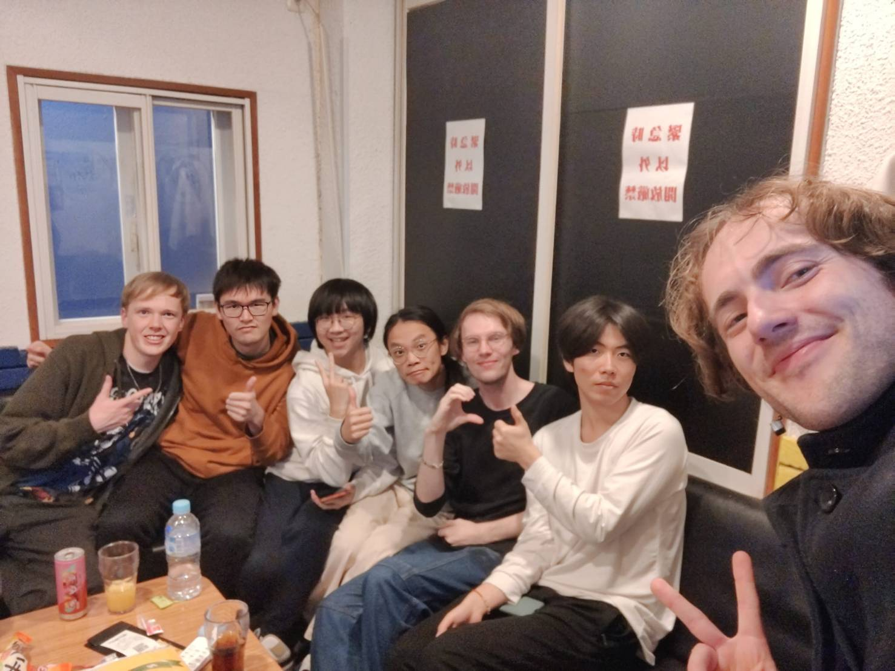
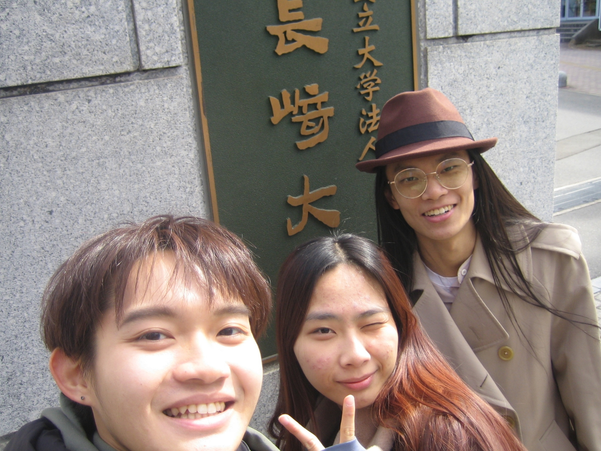
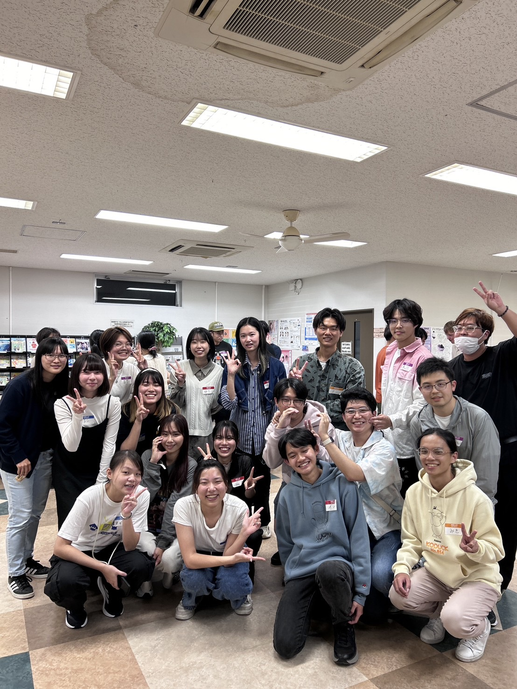
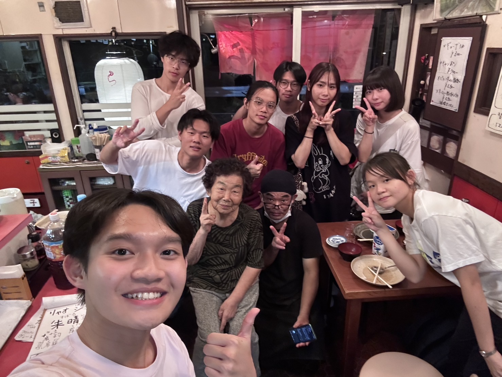
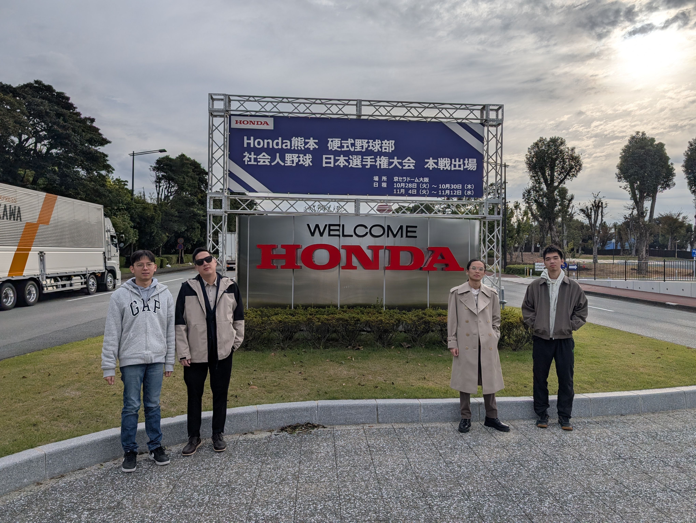

Japan


赴日技術支援現場 — 於日本合作夥伴廠區排錯實錄
日本經歷
留學長崎與赴日出差的實務軌跡，結合跨文化溝通與工程排錯實力。
🇯🇵 日本長崎大學 學術交換留學
在學期間獲選赴日本長崎大學進行交換留學。此行特別選修日本語言文化，積極參與文化交流，深化國際化思維，與世界各地來日本的人互相切磋學習日文。
留學生活與交流紀實

長崎留學生活點滴

文化交流體驗

校園生活與探訪

在地學術探討
語言檢定與專業證照
長崎大學留學證明
JLPT N2 日檢證書
日本領隊執照
🚗 Garmin 赴日現場支援出差
實習期間獲派赴日本進行現場產品重工與設備異常問題排除。在時限緊迫的現場壓力下，發揮電子工程背景與日語雙重優勢，擔任中日雙語第一線技術協調人，成功排除故障並保障產品順利出貨。
出差現場點記

出差核心工作內容
- 1. 現場異常排除與重工 面對日本現場設備異常，快速釐清軟硬體故障，進行系統性重工，成功解決出貨前的關鍵阻礙。
- 2. 中日雙語技術協作橋樑 擔任現場技術對接窗口，直接與日本當地工廠技術人員溝通，並將關鍵資訊即時傳回台灣研發與客服團隊，徹底消除語言與時間差障礙。
- 3. 確保批次產品如期交付 於緊湊的時限內完成全數設備的異常排除與測試，保障該批次產品順利出廠，獲得主管與日方合作夥伴的高度信賴。